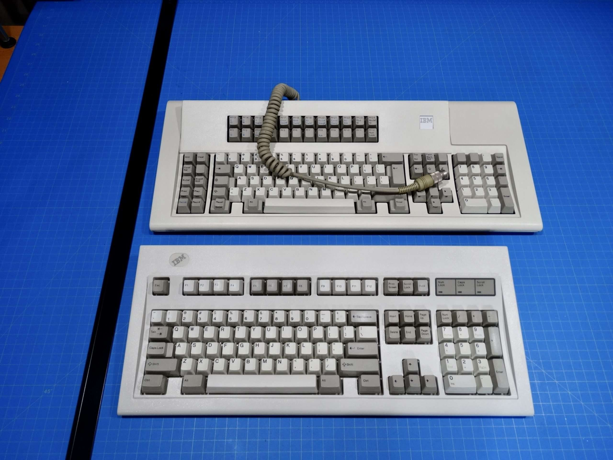

About
In 1985, IBM introduced the Model M series, a collection of computer keyboards that became the foundation for numerous subsequent models. Initially designed and manufactured by IBM, these keyboards were later released by Lexmark International, Maxi Switch, and Unicomp. Available in various variations, each had its unique features. Notably, they featured a spring-based key mechanism, offering excellent tactile feedback when keys were pressed. Recognized for their durability and typing comfort, Model M keyboards gained attention due to their longevity and consistent typing quality. The design of the Model M keyboards significantly influenced later general-purpose keyboards, particularly in their key layout and ergonomic features. During their peak popularity, Model M keyboards gained widespread usage, capturing the attention of around 10 million users during the IBM and Lexmark eras. However, their market dominance declined in the 1990s due to the industry's shift toward more cost-effective membrane-switch keyboards. IBM discontinued the production of Model M keyboards in 1996.
History
Manufactured by IBM in 1985, the Model M keyboard was introduced as a more cost-effective alternative to its predecessor, the Model F keyboard. Initial design efforts took place at IBM between 1983 and 1984, incorporating extensive user feedback, ergonomic studies, and analysis of competing products. Drawing inspiration from the LK-201 keyboard accompanying the VT220 serial terminal, the Model M's layout significantly differed from the Model F, notably incorporating an inverted-T arrangement for its arrow keys. Production of the Model M commenced in 1985 and often accompanied new IBM computers. Although primarily associated with the IBM PC and its successors, it initially shipped with the 3161 terminal and was utilized across various other IBM product lines, including the 5250 terminal and RS/6000.
Manufacturing of the Model M took place at IBM facilities in Lexington, Kentucky; Greenock, Scotland; and Guadalajara, Mexico. The most prevalent variant, the IBM Enhanced Keyboard (part number 1391401), was widely distributed with the IBM Personal System/2. Until around 1993, most Model M keyboards featured a durable, coiled, detachable cable with AT or PS/2 connectors, in lengths of 5 and 10 feet (1.5 and 3 meters). By approximately 1994, manufacturing cost reductions led to the adoption of flat non-detachable cables, maintaining the 101-key layout without incorporating the Microsoft Windows keys that became common in later keyboards. Subsequently, Unicomp developed a 104-key Model M that included Windows keys.
In March 1991, IBM partly shifted its equipment manufacturing, including keyboard production, establishing Lexmark International. Lexmark continued Model M keyboard production in the USA, UK, and Mexico, supplying them primarily to IBM. Various part numbers, such as 52G9658, 52G9700, 71G4644, 82G2383, and 42H1292, were bundled with IBM PS/ValuePoint and IBM PC Series.
Variations
The Model M keyboards boasted a variety of versions known as "part numbers," each offering different features and color options. Among these variants, a highly sought-after iteration is the Space Saving Keyboard, which consolidates the number pad into the primary section, significantly reducing the keyboard's width. This Space Saving Keyboard likely served as the precursor to what is now recognized as the "tenkeyless keyboard" layout. IBM introduced both standard and Space Saving Model M keyboards in an alternative 'gray/pebble' color, specifically intended for their Industrial computers. This color variation was designed to mask discoloration resulting from handling in industrial or production environments. Additionally, some variations featured a grounded spacebar, while later models incorporated drainage holes, aimed at minimizing damage caused by accidental liquid spills.
Design
The most commonly recognized version, often referred to as the "Model M," bears Part No. 1391401, which served as the basis for various other iterations. This particular model, recognized as the Enhanced Keyboard, embraced IBM's patented buckling spring mechanism and featured interchangeable keycaps. Praised extensively for its durability and reliability, the design of the Model M has remained relatively unchanged since the 1980s. While nearly all other computing hardware, from PCs to monitors to mice, has undergone significant transformations, the Model M's fundamental structure has persevered. Thanks to its robust construction, which includes a sturdy steel backplate and resilient plastic frame, many early Model M Keyboards remain operational without any modifications, nearly four decades after their inception. The Model M's unique buckling spring key design delivers a distinct tactile sensation and auditory feedback. Unlike more conventional dome switch designs, the buckling springs offer users noticeable tactile and auditory responses. Users have reported enhanced typing speed and accuracy owing to the more pronounced touch of the Model M compared to other keyboards.
Moreover, enthusiasts often advocate that tactile-feedback keyboards like the Model M alleviate hand strain, potentially preventing or even reversing Repetitive Strain Injury (RSI). The keys require significant pressure to depress, resulting in a pronounced sound that aids typists familiar with typewriters accustomed to that level of feedback. As a result, the Model M is sometimes referred to as the "clicky keyboard." In contrast to competitors using Cherry and Alps-style keyswitches, buckling-spring keyswitches lack a plunger part with sliding surfaces prone to contamination. This characteristic renders Model Ms far more resilient to dirt, dust, and grit, contributing significantly to their prolonged lifespan and popularity in demanding industrial environments. Early variants of Model Ms typically featured a 1.25" slotted, circular speaker grille on their underside, although relatively few actually contained a speaker. The speaker was primarily utilized for emitting beep codes on older terminal systems, particularly in the most common P/Ns like 1394540 and 51G872 designed for RS/6000 UNIX workstations.
Model Ms were produced with various interface and connector standards, some of which lacked comprehensive documentation and required reverse-engineering efforts by enthusiasts. Initial versions aligned with PC XT and AT systems and used specific connectors. With the introduction of PS/2, most iterations incorporated connectors tailored for PS/2 ports, such as the 1391401 model. Unicomp introduced support for USB. Earlier versions of Model Ms had detachable cables with an SDL connector, while subsequent Lexmark and Unicomp variants featured fixed cables. Recent Unicomp iterations integrated a detachable cable with an unconventional locking USB Type A jack on the keyboard.
Features by part number
Layout types:
- T101 – ANSI layout, the model M's original.
- 102 – International layout with additional key between Z and a half-sized left shift, AltGr in place of right Alt, usually with ISO-style long Enter.
- 103 – ANSI layout with one Super key and one Menu key, long spacebar.
- 104 – ANSI layout plus two Windows keys and one Menu key, short spacebar.
- 122 – IBM terminal layout with extra function keys and left-side function pad.
- 84 – Tenkeyless version of the 101-key ANSI layout.
- 87 – Tenkeyless version of the 104-key ANSI layout.
Logo position legend:
- LC – Left Corner
- RC – Right Corner
- LLC – Lower Left Corner
- LRC – Lower Right Corner
- ULC – Upper Left Corner
- URC – Upper Right Corner
- LLP – Lock-Light Panel